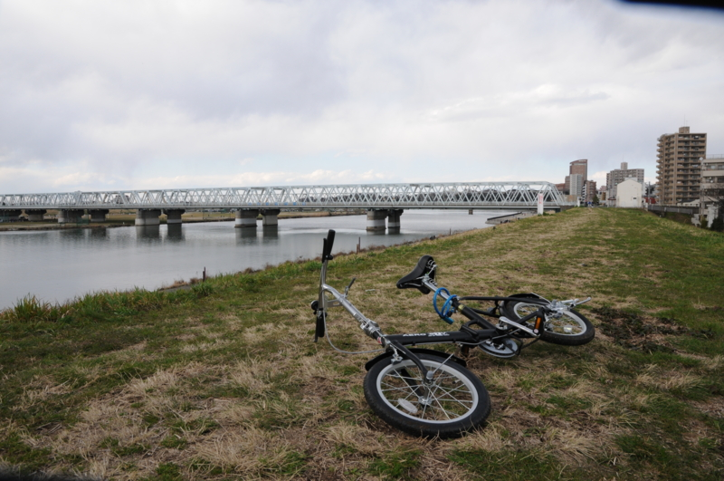

江戸川を散歩。
公開日：
今週末は PC のセットアップとお勉強に使おうと思ってたのだけど、外に出ないとどうにもイライラが募る。なので、もらったばかりの折りたたみ自転車を引っ張り出して、小岩までカレーを食べに行った。
いつも通り激辛を頼んだのだけど、ここ最近食べてなかったせいか、辛すぎて食べられない。でも、香辛料の涼味と玉ねぎの甘さ、噛めば噛むほどにじみ出るマトンの旨みはなかなかグッド。

帰りは市川橋でぼんやり写真を撮るなど。少年野球だの、バイクの練習だの（これ今度行ってみようかな？）、面白そうな題材はたくさんあったのだけど、どうも天気がスカっとしなくて、うまいものはひとつも撮れなかった。あとは、野球を見て知らんおっさんと駄弁ったりなど。そうやって三時間ぐらい潰した。
江戸川乱歩かとオモタ RT @daruyanagi: はてなブログに投稿しました 江戸川を散歩。 - だるろぐ htn.to/dVhKoH
— 『自転車に乗れてない・・』な、もりちゃんさん (@tyorosan) 3月 25, 2012その発想はなかった！